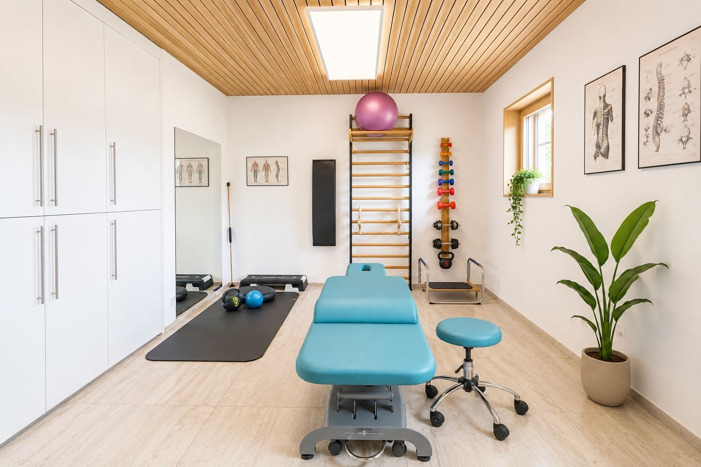
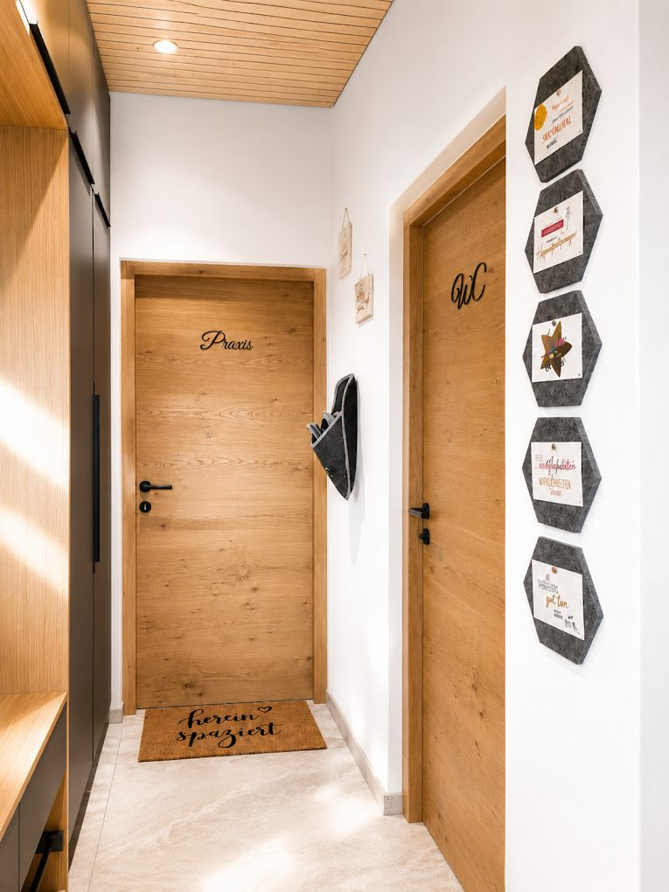
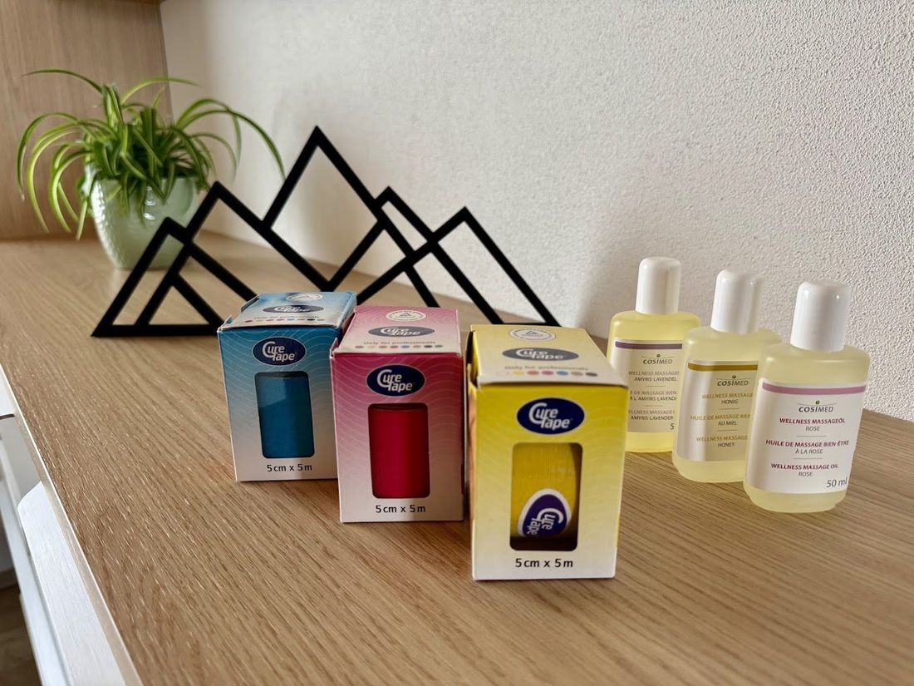
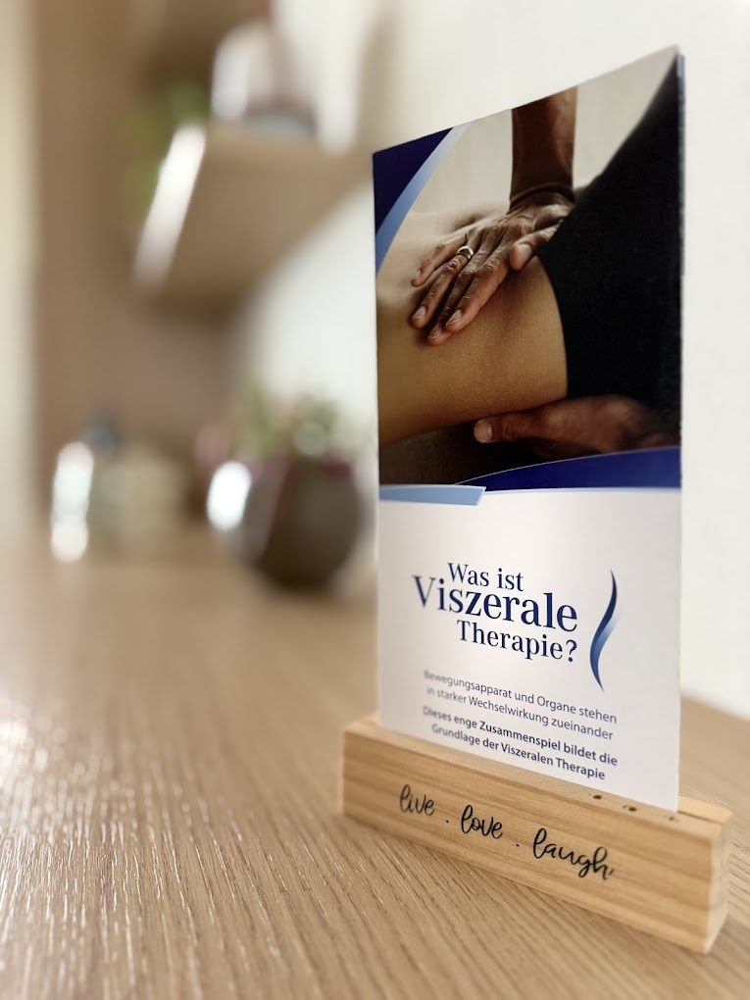
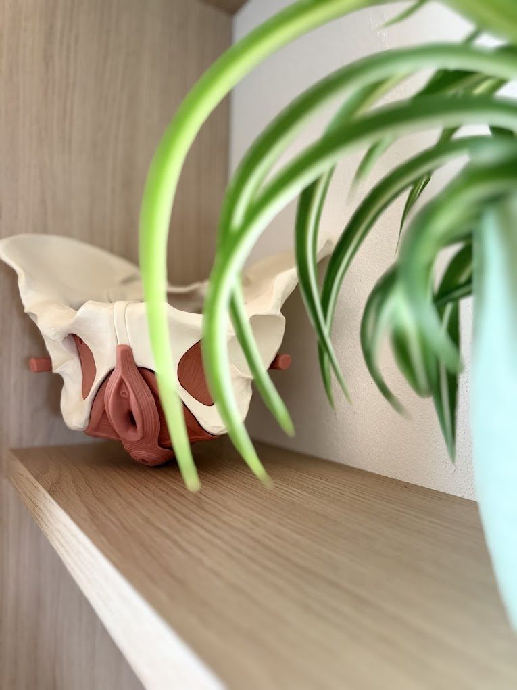
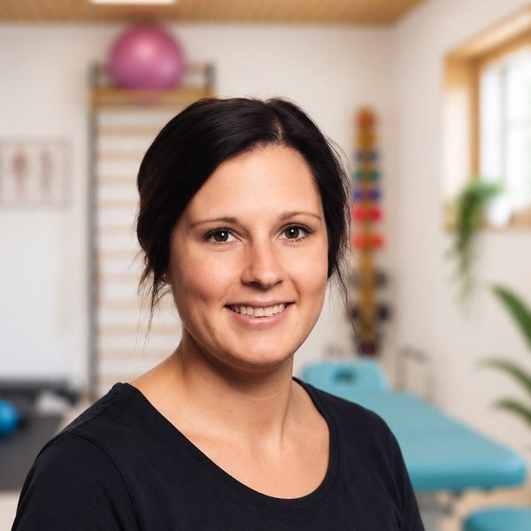
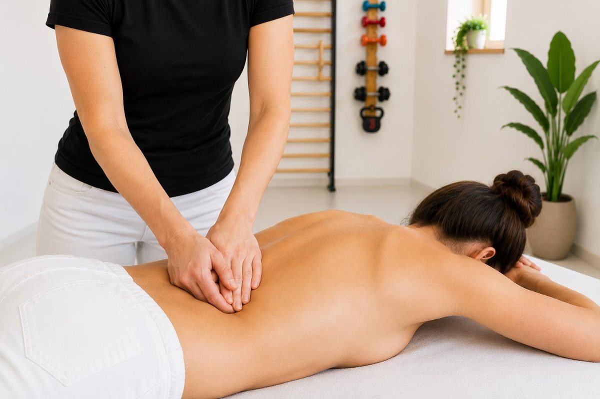
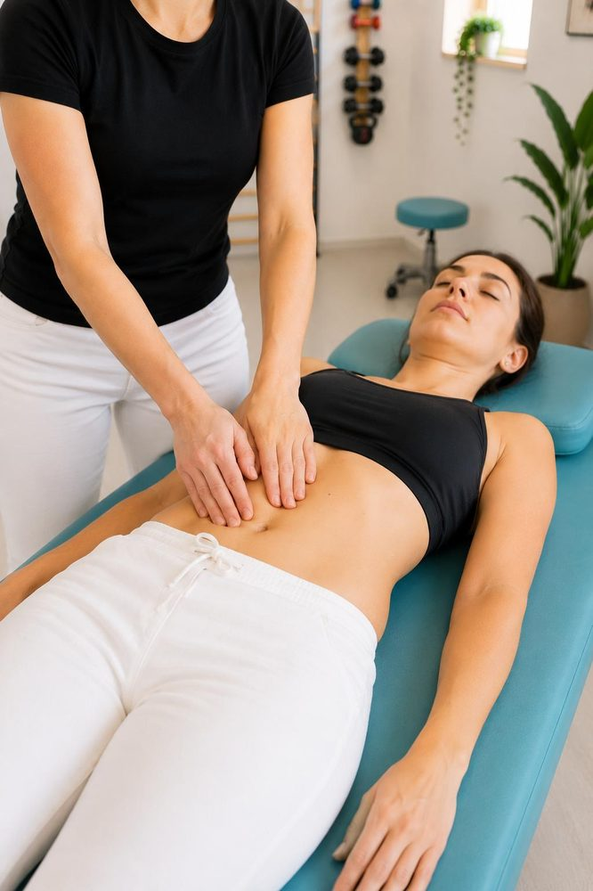
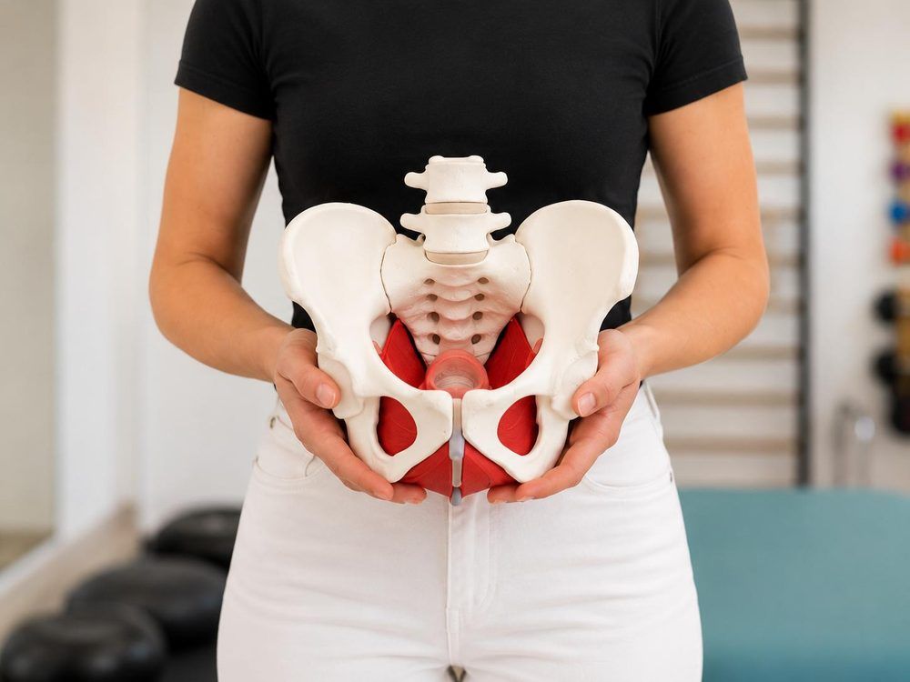
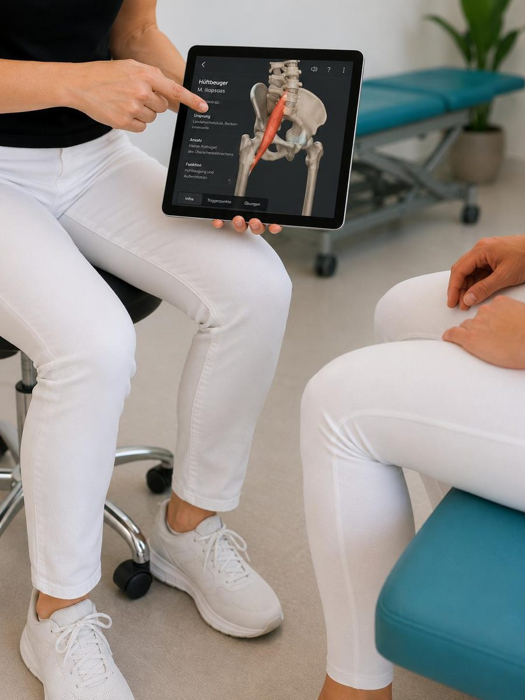

„Gemeinsam geht’s bergauf – mit gezielter Therapie und persönlicher Begleitung"Mehr entdecken

In meiner Praxis stehst DU und dein Wohlbefinden im Mittelpunkt. Mit gezielter Physiotherapie und wohltuenden Heilmassagen unterstütze ich dich dabei, Schmerzen zu lindern, Beweglichkeit zu verbessern und neue Kraft für den Alltag zu gewinnen.
Ob nach Verletzungen, bei chronischen Beschwerden oder einfach zur Entspannung — ich nehme mir Zeit für dich und erstelle individuelle Behandlungspläne, die genau auf deine Bedürfnisse abgestimmt sind. Fachliche Kompetenz, persönliche Betreuung und eine angenehme Atmosphäre bilden die Grundlage meiner Arbeit.
Meine Philosophie: Zeit für individuelle Betreuung und verständliche Aufklärung, körperliches Wohlbefinden durch gezielte Therapiemaßnahmen.
Ich freue mich darauf, dich auf deinem Weg zu mehr Gesundheit und Lebensqualität zu begleiten.





Ich bin Katharina Heufelder,
Physiotherapeutin und Medizinische Masseurin in Batschuns mit den Schwerpunkten Orthopädie, Traumatologie und Unfallchirurgie, Viszerale Therapie und Frauengesundheit.
geboren und aufgewachsen im schönen Kärntnerland und seit vielen Jahren mit Begeisterung Physiotherapeutin. Was als Interesse an Bewegung und Gesundheit begann, hat sich zu meiner Leidenschaft entwickelt: in meiner kleinen aber feinen Praxis begleite ich dich mit Freude und Fachwissen auf deinem Weg zu mehr Gesundheit, Beweglichkeit und Wohlbefinden.
Obwohl mein Herz sehr für meine Arbeit schlägt, gibt es auch noch ein paar andere Dinge in meinem Leben:
Die Berge sind bis heute meine Heimat und mein Ausgleich – egal ob beim Skifahren, auf Skitour, beim Wandern, Mountainbiken oder bei anderen Bergsportaktivitäten.
Am wertvollsten sind für mich heute aber die gemeinsamen Erlebnisse mit meiner Familie. Ob beim Wandern, Radfahren oder einfach draußen in der Natur – als Mama von zwei wunderbaren Kindern bedeutet mir diese Zeit am meisten und erinnert mich daran, worauf es im Leben wirklich ankommt.
Ich liebe es auch, neue Orte zu entdecken und andere Kulturen kennenzulernen. Mindestens einmal im Jahr zieht es uns in ein neues Abenteuer – mit offenen Augen, viel Neugier und der Freude daran, unvergessliche Erinnerungen zu sammeln. Jede Reise zeigt mir, wie vielfältig und faszinierend unsere Welt ist.
Ich liebe das gesellige Beisammensein und bin Fan der Blasmusik. Wann immer der Familienalltag es zulässt, verbringe ich meine Zeit auch gerne mal auf Zeltfesten – dort genieße ich die besondere Atmosphäre, die Musik und das gesellige Miteinander.
„Jeder Mensch bringt seine eigene Geschichte mit und der Körper erzählt oft mehr, als man denkt."
Ich nehme mir Zeit, höre aufmerksam zu und schaue genau hin – denn jeder Mensch ist einzigartig und verdient eine Behandlung, die wirklich zu ihm passt.

Durch gezielte manuelle Therapie, aktives Training und das Erlernen gesunder Bewegungsmuster arbeite ich mit dir daran, nachhaltige Lösungen zu schaffen – für weniger Schmerzen, mehr Beweglichkeit und ein gesundes Körpergefühl im Alltag. Ich bin überzeugt, dass der Körper in den meisten Fällen die Fähigkeit besitzt, sich anzupassen und zu regenerieren. Oft braucht er lediglich die richtigen Impulse, um wieder in sein natürliches Gleichgewicht zu finden.

Wenn wir uns bewegen, sind nicht nur unsere Gelenke und Muskeln beteiligt, sondern zu einem großen Teil auch unsere Organe. Diese müssen flexibel und gegeneinander gut verschieblich sein. Das gewährleistet zum einen eine „reibungslose" Beweglichkeit und zum anderen eine einwandfreie Funktion der einzelnen Organe.
Aus vielen Gründen kann es zu Dysfunktionen der Organe kommen: Infektionen, Operationen, Fehlernährung, schlechte Haltung, Skoliosen oder emotionale Belastungen. Als Konsequenz daraus bauen die belasteten Organe Spannungen auf und können diese in Folge auf den Bewegungsapparat übertragen.
Beispielsweise können Verstopfung oder häufige Blasenentzündungen zu Beschwerden am Hüftgelenk oder an der Lendenwirbelsäule (Schmerzen, Bandscheibenprobleme, Gleitwirbel, …) führen.

Gerade weil der Beckenboden für viele Frauen noch immer ein Tabuthema ist, liegt mir diese Arbeit besonders am Herzen. Beschwerden wie Harnverlust, Senkungsgefühle oder Schmerzen werden oft aus Scham verschwiegen oder als „normal" hingenommen – dabei gibt es wirksame Möglichkeiten, sie zu behandeln.
Mein Ziel ist es, einen geschützten Raum zu schaffen, in dem offen über diese Themen gesprochen werden kann. Mit Einfühlungsvermögen, Fachwissen und einer individuellen physiotherapeutischen Begleitung unterstütze ich dich dabei, deinen Körper besser zu verstehen, Beschwerden nachhaltig zu lindern und neues Vertrauen in dich selbst zu gewinnen.
Ich wünsche mir, dass keine Frau mit ihren Beschwerden alleine bleibt oder glaubt, sie müsse diese einfach akzeptieren. Denn Lebensqualität beginnt dort, wo wir den Mut haben, über Tabuthemen zu sprechen – und gemeinsam Lösungen zu finden.

Prävention ist ebenso ein wichtiger Bestandteil meiner physiotherapeutischen Arbeit. Durch gezielte Bewegungstherapie, individuelle Beratung und verständliche Aufklärung unterstütze ich dich dabei, Zusammenhänge zu erkennen, Fehlbelastungen zu vermeiden und Beschwerden nachhaltig vorzubeugen.
Von der Überweisung bis zur Abrechnung — einfach und unkompliziert.
Dein Hausarzt oder Facharzt stellt dir den entsprechenden Therapieschein aus.
Nur für SVS-Versicherte: Die Überweisung muss vorab bei der Krankenkasse bewilligt werden.
Kontaktiere mich — ich finde mit dir gemeinsam einen passenden Termin.
Individuell abgestimmte Behandlung in meiner Praxis in Batschuns — bei Bedarf auch als Hausbesuch. Zum ersten Termin bitte Überweisungsschein, vorhandene Befunde (Röntgen, MRT) und bequeme Kleidung mitbringen.
Zahlungsbeleg und Verordnungsschein bei deiner Krankenkasse einreichen — du erhältst gemäß Tarifbestimmungen einen Teil der Kosten rückerstattet.
Den verbleibenden Selbstbehalt kannst du bei einer vorhandenen Zusatzversicherung einreichen.
Ich arbeite als Wahltherapeutin — am Ende der Therapieserie bekommst du von mir eine Honorarnote, welche vollständig zu begleichen ist. Ich gebe dir gerne Auskünfte über die genaue Vorgehensweise für die Rückverrechnung.
Präventive Maßnahmen wie Haltungsschulung, Massagen und Wärmeanwendungen sind auch direkt, ohne Verordnung durch einen Arzt, möglich.
Solltest du einen Termin nicht wahrnehmen können, bitte ich um Absage mindestens 24 Stunden vorher — andernfalls muss ich ein Ausfallhonorar verrechnen.
Ich freue mich auf deine Anfrage — persönlich, telefonisch oder per E-Mail.
Physio Bergauf – Katharina Heufelder, BSc.
Bazol 20
6835 Batschuns
Vorarlberg, Österreich
Termine nach Vereinbarung
Schreib mir direkt hier — ich melde mich so rasch wie möglich bei dir.